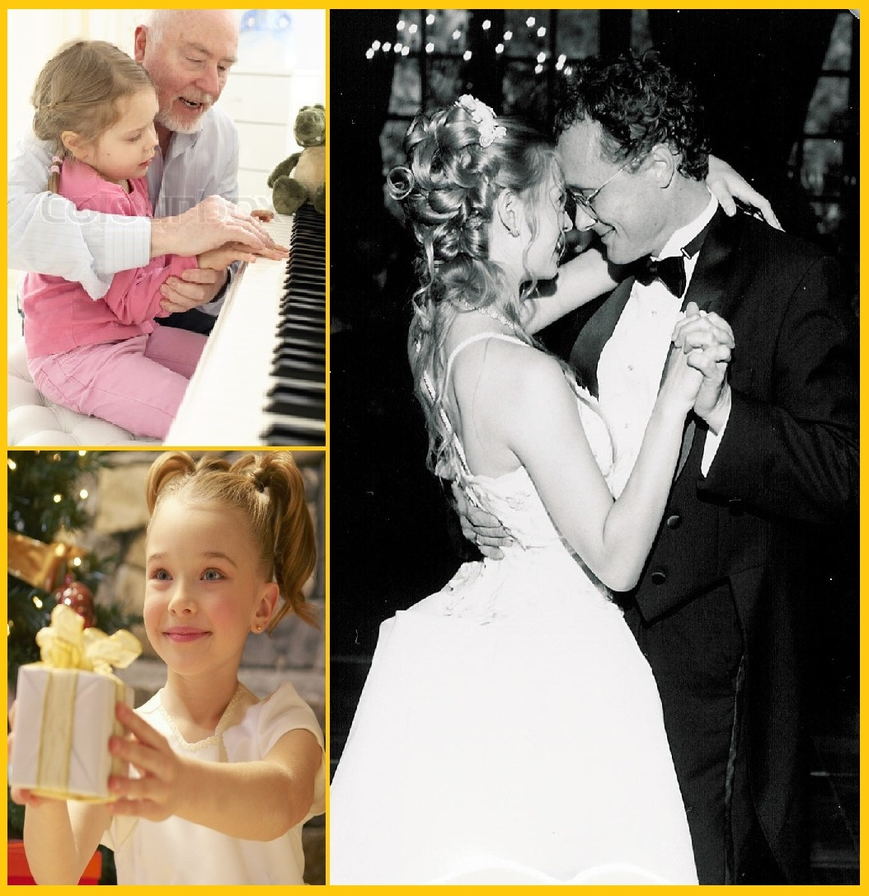
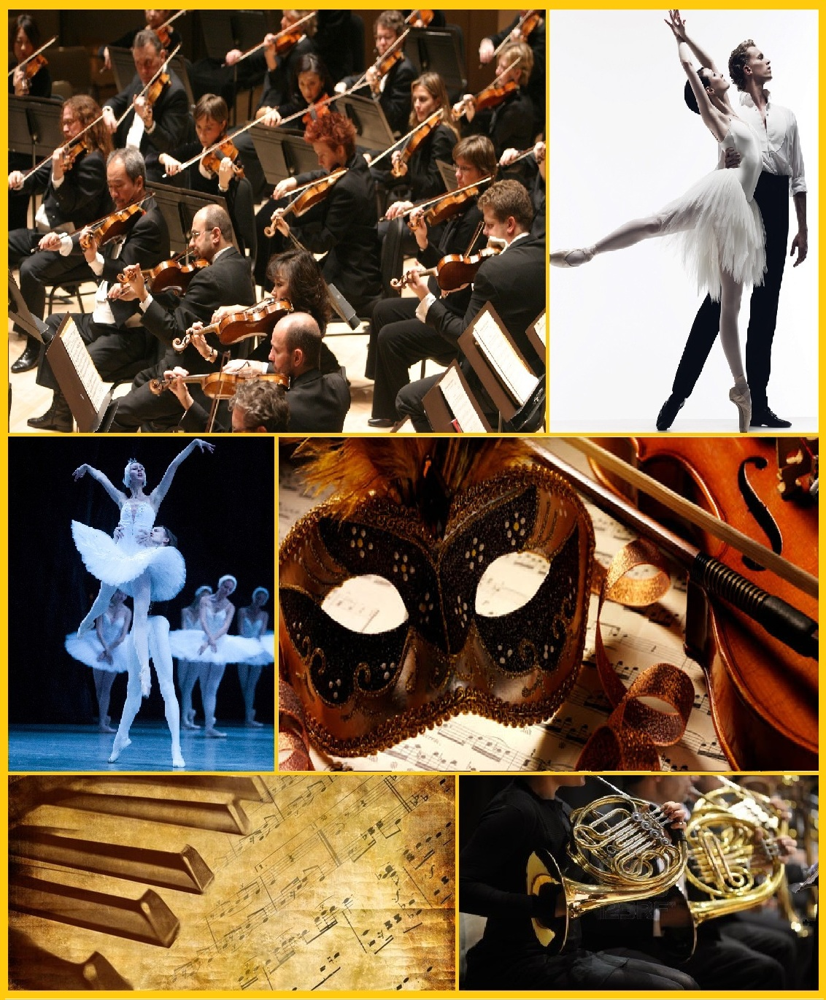

A Guilda Dos Compositores é uma comunidade de estudiosos da música, cujo fim é a produção e divulgação de composições originais em diversas vertentes. Entre as nossas muitas realizações, está a de criar obras musicais atendendo aos objetivos dos nossos contratantes. Homenagens pessoais ou produções interessadas, música sinfônica e trilhas orquestradas em caráter de cinema, canções e poemas musicados, valsas, tangos, sonatas, choros, aberturas sinfônicas, baladas, concertos... Música original sob a sua requisição, em qualquer gênero, caráter ou estilo. Conheça-nos:

Pessoal
Composições originais para imortalizar ocasiões, presentear / homenagear entes queridos ou apenas deixar o seu registro na história da Grande Música. Casamentos, bodas, aniversários, 15 anos e homenagens em geral.

Produções
Trilhas originais para projetos de cinema, TV, games, eventos, festivais e outros. Jingles, aberturas e vinhetas em qualquer caráter (solene, vitorioso, cômico, suspense, lúdico, romântico...). Grandes e pequenas produções, sem distinção.

Corpo Artístico
Composições originais e arranjos para orquestras, grupos de câmara, companhias de ballet clássico, teatro e projetos artísticos em geral, sem limitações temáticas, de período histórico, técnicas ou de finalidade.
PROJETOS ACADÊMICOS: Peças originais para recitais de formatura, dissertações e teses, além de trabalhos de pesquisa e revisão, da Graduação ao Doutorado. Contate-nos.